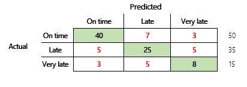

Ergebnisse von Machine Learning-Modellen (Vorschau)
Important
Dynamics 365 for Finance and Operations hat sich zu speziell entwickelten Anwendungen entwickelt, mit denen Sie bestimmte Geschäftsfunktionen verwalten können. Weitere Informationen zu diesen Änderungen finden Sie im Dynamics 365-Lizenzierungshandbuch.
Important
Die hier aufgeführten Funktion sind alle oder teilweise im Rahmen einer Vorschauversion verfügbar. Inhalt und Funktionsweise unterliegen Änderungen. Weitere Informationen zu Vorschauversionen finden Sie unter Dienstupdateverfügbarkeit.
In diesem Thema werden Verwirrungsmatrizen, Klassifizierungsprobleme und Genauigkeit in Machine Learning(ML)-Modellen erläutert. Der Zweck besteht darin, Ihr Verständnis der Genauigkeit von ML-Vorhersageergebnissen zu verbessern. Die Zielgruppe umfasst Ingenieure, Analysten und Manager, die ihre Kenntnisse und Fähigkeiten in der Datenwissenschaft erweitern möchten.
Verwirrungs-Matrix
Nachdem ein überwachtes ML-Problem anhand einer Reihe historischer Daten trainiert wurde, wird es anhand von Daten getestet, die beim Trainingsprozess vorenthalten werden. Auf diese Weise können Sie die Vorhersagen des trainierten Modells mit den tatsächlichen Werten vergleichen. Die Verwirrungsmatrix bietet eine Möglichkeit zu bewerten, wie erfolgreich ein Klassifizierungsproblem ist und wo es Fehler macht (d.h. wo es „verwirrt“ ist).
Ihr Ziel ist es beispielsweise, anhand einiger körperlicher und Verhaltensmerkmale vorherzusagen, ob ein Haustier ein Hund oder eine Katze ist. Wenn Sie einen Testdatensatz haben, der 30 Hunde und 20 Katzen enthält, ähnelt die Verwirrungsmatrix möglicherweise der folgenden Abbildung.
{kind=link}
Die Zahlen in den grünen Zellen repräsentieren korrekte Vorhersagen. Wie Sie sehen können, hat das Modell einen höheren Prozentsatz der tatsächlichen Katzen korrekt vorhergesagt. Die Gesamtgenauigkeit des Modells ist einfach zu berechnen. In diesem Fall ist es 42 ÷ 50 oder 0,84.
Mehrklassenklassifizierungen in einer Verwirrungsmatrix
Die meisten Diskussionen über die Verwirrungsmatrix konzentrieren sich auf binäre Klassifizierung wie im vorhergehenden Beispiel. Dieser Fall ist ein Sonderfall, in dem andere Metriken berücksichtigt werden können, z. B. Empfindlichkeit und Erinnerung.
Als Nächstes betrachten wir ein Klassifizierungsproblem für ein Finanzszenario mit drei Zuständen. Das Modell sagt voraus, ob eine Kundenrechnung pünktlich, verspätet oder sehr spät bezahlt wird. Beispielsweise werden von 100 Testrechnungen 50 pünktlich, 35 verspätet und 15 sehr spät bezahlt. In diesem Fall kann ein Modell eine Verwirrungsmatrix erzeugen, die der folgenden Abbildung ähnelt.
 Modell 1
{kind=link}
Eine Verwirrungsmatrix liefert wesentlich mehr Informationen als eine einfache Genauigkeitsmetrik. Sie ist jedoch immer noch relativ leicht zu verstehen. Eine Verwirrungsmatrix gibt an, ob Sie einen ausgeglichenen Datensatz haben, bei dem die Ausgabeklassen ähnliche Zählungen aufweisen. Für das Szenario mit mehreren Klassen wird angegeben, wie weit eine Vorhersage entfernt sein könnte, wenn die Ausgabeklassen ordinal sind, wie im vorherigen Beispiel zu Kundenzahlungen.
Modellgenauigkeit
Unterschiedliche Genauigkeitsmetriken haben den Vorteil, die Modellqualität zu quantifizieren.
Da Genauigkeit eine leicht zu verstehende Metrik ist, ist sie ein guter Ausgangspunkt, um anderen Personen ein Modell zu erklären, insbesondere Benutzern des Modells, die keine Datenwissenschaftler sind. Zum Verständnis der Modellgenauigkeit ist kein Verständnis der Statistik erforderlich. Wenn eine Verwirrungsmatrix verfügbar ist, bietet sie weitere Einblicke in die Leistung des Modells.
Für ein gründlicheres Verständnis sollten jedoch einige Herausforderungen beachtet werden, die mit der Genauigkeit zusammenhängen. Der Nutzen der Metrik hängt vom Kontext des Problems ab. Eine Frage, die sich häufig in Bezug auf die Modellleistung stellt, lautet: „Wie gut ist das Modell?“ Die Antwort auf diese Frage ist jedoch nicht unbedingt einfach. Betrachten Sie die folgende Verwirrungsmatrix (Modell 2).
{kind=link}
Eine schnelle Berechnung zeigt, dass die Genauigkeit dieses Modells (70 + 10 + 3) ÷ 100 oder 0,83 beträgt. Oberflächlich betrachtet scheint dieses Ergebnis besser zu sein als das Ergebnis des vorherigen Mehrklassenmodells (Modell 1) mit einer Genauigkeit von 0,73. Aber ist es besser?
Um diese Frage zu beantworten, betrachten Sie die Richtigkeit einer naiven Vermutung. Bei einem Klassifizierungsproblem wird durch eine einfache Vermutung immer die häufigste Klasse vorhergesagt. Für Modell 1 ist diese Schätzung „pünktlich“ und ergibt eine Genauigkeit von 0,50. Die Vermutung bei Modell 2 ist ebenfalls „pünktlich“ und ergibt eine Genauigkeit von 0,80. Da Modell 1 die naive Vermutung um 0,73 – 0,50 = 0,23 verbessert, während Modell 2 die naive Vermutung um 0,83 – 0,80 = 0,03 verbessert, ist Modell 1 ein besseres Modell, obwohl es eine geringere Genauigkeit aufweist. Die Berechnung zeigt, dass eine effektive Bewertung der Qualität eines Modells mehr Kontext erfordert als den Genauigkeitswert.
Ein weiterer Aspekt ist erwähnenswert. Stellen Sie sich ein Szenario vor, in dem ein medizinischer Test verwendet wird, um eine Krankheit bei einem Patienten zu erkennen. Dieses Problem ist ein binäres Klassifizierungsproblem, bei dem ein positives Ergebnis anzeigt, dass der Patient an der Krankheit leidet. In diesem Szenario müssen Sie über die Auswirkungen der folgenden Fehler nachdenken:
- Falsche Positive, bei denen der Test besagt, dass ein Patient an der Krankheit leidet, diese aber nicht wirklich hat
- Falsche Negative, bei denen der Test besagt, dass ein Patient nicht an der Krankheit leidet, er diese aber hat
Natürlich sind beide Fehlertypen unerwünscht, aber was ist schlimmer? Auch hier kommt es darauf an. Bei einer lebensbedrohlichen Krankheit, die eine schnelle Behandlung erfordert, hat die Minimierung falsch negativer Ergebnisse (hoffentlich gefolgt von zusätzlichen Tests) Vorrang. In anderen, weniger kritischen Situationen können die Modellersteller stattdessen Fehlalarme minimieren. In jedem Fall ist eine vernünftige Schlussfolgerung, dass Sie mehr Informationen haben müssen, als eine Genauigkeitsmetrik liefert, um die Qualität eines Modells effektiv zu bestimmen.
Empfehlungen
Die Genauigkeit ist ein wichtiges Instrument für die Kommunikation mit Domain-Experten, die mit Statistiken nicht vertraut sind. Damit die Informationen nützlich werden, ist es jedoch wichtig, dass zusätzlicher Kontext zusammen mit dem Genauigkeitswert bereitgestellt wird.
Für das Zahlungsvorhersageszenario können Sie ein Ziel für das ML-Modell festlegen, das Faktoren für unterschiedliche Zahlungsverhalten enthält. Das Ziel ist, dass das Modell eine naive Vermutung verbessert, indem die Anzahl der falschen Antworten um mindestens 50 Prozent reduziert wird. Mit anderen Worten, Sie möchten eine Zielgenauigkeit, die den Unterschied zwischen der Genauigkeit einer naiven Vermutung und 100 Prozent aufteilt.
Die folgende Tabelle fasst dieses Prinzip für die Verwirrungsmatrizen in diesem Thema zusammen.
| Modell | Naive Vermutung | Vorgabe | Modellgenauigkeit | Ist das Ziel erreicht? |
|---|---|---|---|---|
| Modell 1 | 0.50 | 0.75 | 0.73 | Fast. Dieses Modell verbessert die Vermutung erheblich. |
| Modell 2 | 0.80 | 0.90 | 0.83 | Nr. Verbesserung ist erforderlich. |
Klassifizierung F1-Genauigkeit
Die letzte Überlegung in diesem Thema ist ein fortgeschritteneres Maß für die Klassifizierung der ML-Leistung, die als F1-Genauigkeit bekannt ist.
Bevor die F1-Genauigkeit definiert werden kann, müssen zwei zusätzliche Metriken eingeführt werden: Präzision und Erinnerung. Die Präzision gibt an, wie viele der insgesamt als positiv angegebenen Vorhersagen korrekt zugewiesen wurden. Diese Metrik wird auch als positiver Vorhersagewert bezeichnet. Erinnerung ist die Gesamtzahl der tatsächlich positiven Fälle, die korrekt vorhergesagt wurden. Diese Metrik wird auch als Empfindlichkeit bezeichnet.
{kind=link}
In der Verwirrungsmatrix in der vorhergehenden Abbildung werden diese Metriken folgendermaßen berechnet:
- Präzision = TP ÷ (TP + FP)
- Erinnerung = TP ÷ (TP + FN)
Das F1-Maß kombiniert Präzision und Erinnerung. Das Ergebnis ist das harmonische Mittel der beiden Werte. Es wird folgendermaßen berechnet:
- F1 = 2 × (Präzision × Erinnerung) ÷ (Präzision + Erinnerung)
Schauen wir uns ein konkretes Beispiel an. Zu Beginn dieses Themas gab es ein Beispiel für ein Modell, das vorhersagte, ob es sich bei einem Tier um einen Hund oder eine Katze handelte. Die Abbildung wird hier wiederholt.
Hier sind die Ergebnisse, wenn „Hund“ als positive Antwort verwendet wird.
- Präzision = 24 ÷ (24 + 2) = 0,9231
- Erinnerung = 24 ÷ (24 + 6) = 0,8
- F1 = 2 × (0,9231 × 0,8) ÷ (0,9231 + 0,8) = 0,8572
Wie Sie sehen können, liegt der F1-Wert zwischen den Werten für Präzision und Erinnerung.
Obwohl die F1-Genauigkeit nicht so einfach zu verstehen ist, fügt sie der Grundgenauigkeitszahl eine Nuance hinzu. Es kann auch bei unausgeglichenen Datensätzen hilfreich sein, wie die folgende Diskussion zeigt.
Im Abschnitt Modellgenauigkeit wurden die folgenden zwei Verwirrungsmatrizen verglichen. Obwohl das erste Modell eine geringere Genauigkeit aufwies, wurde es als nützlicheres Modell angesehen, da es eine größere Verbesserung aufwies als die Standardschätzung einer pünktlichen Zahlung.
Mal sehen, wie sich diese beiden Modelle vergleichen lassen, wenn der F1-Wert verwendet wird. Der F1-Wert berücksichtigt die Präzision und die Erinnerung für jeden Zustand, und die F1-Makroberechnung ermittelt dann den Durchschnitt des F1-Werts über die Zustände, um eine F1-Gesamtwert zu bestimmen. Es gibt andere F1-Varianten, aber es ist von größerem Interesse, die Makroversion zu berücksichtigen, da alle drei Zustände gleichermaßen berücksichtigt werden.
Um die Berechnungen zu vereinfachen, wurden Beispielarrays erstellt, die den tatsächlichen und vorhergesagten Werten entsprechen. Diese Arrays verwendeten die Metrikbibliothek von sklearn in Python zur Berechnung der Werte. Hier ist das Ergebnis.
| Modell | Naive Vermutung | Genauigkeit | F1-Makro |
|---|---|---|---|
| Modell 1 | 0.5 | 0.73 | 0.67 |
| Modell 2 | 0.80 | 0.83 | 0.66 |
Weitere Informationen zur Funktionsweise dieser Berechnung finden Sie im Klassifizierungsbericht sklearn.metrics für Modell 1. Die drei Zustände „Pünktlich“, „Verspätet“ und „Sehr spät“ werden durch die mit 1, 2 bzw. 3 gekennzeichneten Zeilen dargestellt. Der Makro-Durchschnitt ist nur der Durchschnitt der Spalte „f1-Score“.
| Präzision | Erinnerung | f1-score | |
|---|---|---|---|
| 1 | 0.83 | 0.80 | 0.82 |
| 2 | 0.68 | 0.71 | 0.69 |
| 3 | 0.50 | 0.50 | 0.50 |
Wie diese Ergebnisse zeigen, weisen die beiden Modelle nahezu identische F1-Makrogenauigkeitswerte auf. In diesem und vielen anderen Fällen liefert die F1-Genauigkeit einen besseren Indikator für die Leistungsfähigkeit eines Modells. Für die Interpretation der Ergebnisse ist es erforderlich, dass Sie verstehen, was im Modell am wichtigsten ist.
Datenschutzhinweis
Vorschauen (1) wenden möglicherweise weniger Datenschutz- und Sicherheitsmaßnahmen an als der Dynamics 365 Finance and Operations-Dienst, (2) sind nicht in der Service Level Agreement (SLA) für diesen Dienst enthalten, (3) sollten nicht zur Verarbeitung personenbezogener Daten oder anderer Daten verwendet werden, die gesetzlichen oder behördlichen Compliance-Anforderungen unterliegen, und (4) hat begrenzten Support.